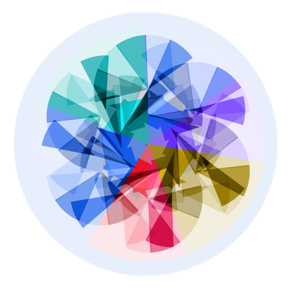

Mit der Academy erhaltet ihr im Business-Plan praxisnahe Lernmodule rund um Facilitation und wirksame Transformation.
Gemeinsam mit 9 Spaces zeigt Plan International Deutschland, wie wertebasiertes Arbeiten Orientierung gibt – nach innen wie nach außen.

Dieses Tool hilft euch dabei, euren Umgang mit Gefühlen zu reflektieren und dadurch im Team eure Verbundenheit zu stärken.
Ein Tool, mit dem du reflektieren kannst, welche Bedürfnisse bei dir gerade (nicht) erfüllt sind.
Mit diesem Tool findet ihr heraus, was euch bei der Arbeit antreibt und wie ihr mehr davon in euren Arbeitsalltag integrieren könnt.
Ein Tool, das euch dabei hilft, persönliche und zwischenmenschliche Bedürfnisse sichtbar zu machen.